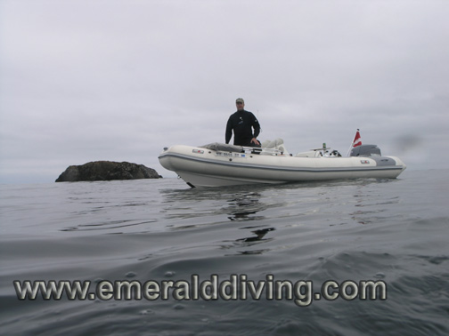
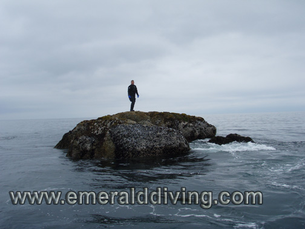
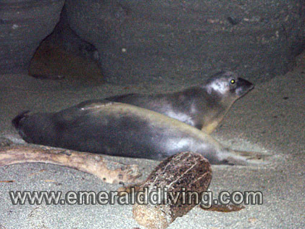
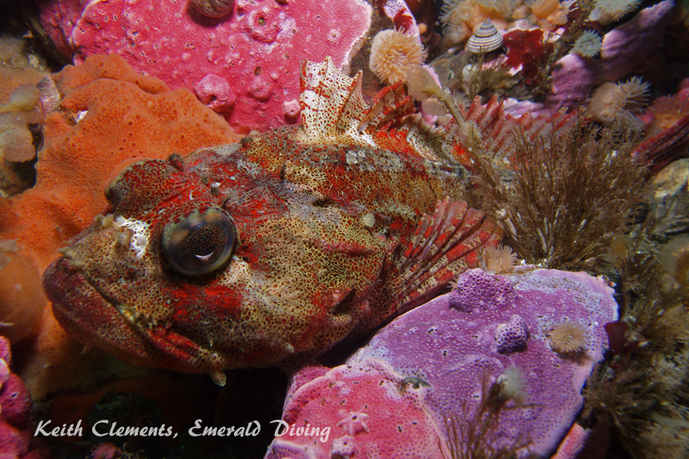

©2010 Emerald Diving, All Rights Reserved
Dive Reports
Emerald Diving
Explore the coastal and inland waters of
Washington and BC
Explore the coastal and inland waters of
Washington and BC
Emerald Diving
Explore the coastal and inland waters of
Washington and BC
Explore the coastal and inland waters of
Washington and BC
Emerald Diving
Explore the coastal and inland waters of
Washington and BC
Explore the coastal and inland waters of
Washington and BC


This is the trip that almost wasn’t, which has become a common theme for Neah Bay diving the last few years. Three of us were scheduled to make this trip, however one of our party backed out the day prior to the trip due to work commitments. That left just Rob and me - not optimal as we prefer not to solo dive the advanced sites in this area. Rob also had work commitments until 7:00 PM the day of our departure. On top of it all, Rob emailed me three hours before we left that he was starting to come down with a cold. Putting common sense aside, we decided to go for it anyway. We realized we may be driving a long way for nothing and left Seattle at 7:30 PM Thursday night. We rolled into Van Riper’s Resort in Sekiu around 11 PM.
We were rewarded the next day with the best water conditions I have ever seen around Tatoosh Island. The only thing missing were sunny skies. The totally absent wind and swell combined with a gentle 0.4 knot flood to generate ideal diving conditions. Duncan Rock, which is usually awash with swell, lay peacefully as if it were amidst a tranquil pond. I elected to warm up with an easy dive at Mushroom Rock. Rob opted for a scooter dive on the Tatoosh Mesa for his initial decent.
We were rewarded the next day with the best water conditions I have ever seen around Tatoosh Island. The only thing missing were sunny skies. The totally absent wind and swell combined with a gentle 0.4 knot flood to generate ideal diving conditions. Duncan Rock, which is usually awash with swell, lay peacefully as if it were amidst a tranquil pond. I elected to warm up with an easy dive at Mushroom Rock. Rob opted for a scooter dive on the Tatoosh Mesa for his initial decent.
Neah Bay: August 8-10, 2008
We then ventured a mile offshore to Duncan Rock where we ended up doing three consecutive dives. Conditions were incredible. My first dive was on the east side of the rock, which is where I traditionally dive this site. While Rob scootered around Duncan on the second dive, I noted the current actually stopped and changed direction almost 2.5 hours after predicted slack before ebb. When Rob surfaced, I took advantage of the current shift and jumped in on the west side of the rock, something I have never been able to do prior to this trip. The west side of Duncan is truly fantastic as it drops very deliberately to depths of over 100 feet. Huge canyons are cut into the surrounding rock. The canyons sandwich a broken shell substrate that is littered with large boulders. The canyon walls are carpeted with colorful invertebrates, while bountiful populations of rockfish, greenling, and sculpins use the boulders at the base of the canyon for cover. Vis varied between 30 and 40 feet. This was truly a fantastic dive!

Rob and my 18' Avon RIB "Super Puff", ready to take on the tranquil waters surrounding Duncan Rock. How often can you use the words "tranquil waters" and "Duncan Rock" in the same sentence?

Gorgeous sea nettles at shallow depths at Duncan Rock - and elsewhere around Cape Flattery.
Conditions were so calm that I snorkeled around and climbed on top of Duncan Rock after the dive. The rock is covered with brilliant gooseneck barnacles and Pacific blue mussels. Gorgeous sea nettles were also prevalent at shallow depths around Duncan Rock - and most other sites - which is somewhat unusual.
Rob finished the day’s boat diving adventures at Stellar Rock with his scooter. He was hoping that the bull stellar sealions in the area would join him on the dive - he was not disappointed. He had an almost religious experience doing acrobatics on his scooter with over a dozen of these giants.
We did some snorkeling in between dives. We snorkeled into some of the caves on Tatoosh Island where Rob has seen elephant seals in prior year. Although there were plenty of cormorants nesting on the ledges in the caves, we didn’t find any elephant seals.
I ended the day with an evening shore dive at Sekiu Jetty. The absence of swell made photography MUCH easier than my last dive at this location. A month earlier, the pounding swell dropped visibility to 5-10 feet and made shooting silverspotted sculpins and tubenose poachers near impossible as they rested on the swaying eelgrass. Vis was a solid 20' on this night. I spent quite a bit of time trying to get pictures of hundreds of Pacific sand lances diving in and out of the gravel long the shoreline, but the shutter delay on my digital camera proved to be insurmountable and I came away empty. However, I did manage to get good pictures of tubenose poaches, silverspotted sculpins, red-eyed jellies, and even a starry flounder. I also enjoyed watching about a dozen juvenile lingcod hunt the sand lances in the shallows.
The wind kicked up slightly from the northwest the next day. The swell had also intensified, but wasn’t bad. We started the day watching a grey whale feed along Waadah Island. We then headed out to the cape where I opted for dives at Slant Rock, the north wall on Tatoosh Island, and Tatoosh Canyon. Three stellar sealions briefly joined my dive on the north wall on two occasions. I felt obligated to dive Tatoosh Canyon as the last two years I have witnessed a mass molting event of male Dungeness crabs at this site in late July. There was no sign of the crabs or empty carapaces this year. The SW wind and swell wreaked havoc with the vis in Tatoosh Canyon as it never exceeded 15 feet. Conversely, vis on the north side of Tatoosh Island was 40-50 feet at times. I also noted a 6 degree water temp difference between the north side (46°) and south side (52°). Rob did two dives this day; one at Mushroom Rock, and another with the sealions at Stellar Rock. I think Rob is hooked on sealions.
We took a break around midday and rechecked some of the caves we snorkeled into the day prior - realizing the chance that the elephant seals had returned was something of a long shot. "Tracker Rob" immediately note drag marks up one of the subterrainian beaches. Although these drag marks did not look like they were made by a 1500 pound animal, they were not there the day prior. We quickly found two female elephant seals resting quietly on the beach amongst the driftwood. We snapped a couple of quick pictures and retreated to leave the animals in peace.
Sunday was our getaway day, so we dove close to Neah Bay. The fog in the morning quickly lifted to reveal sunny skies and placid seas. I opted for two dives at one of my favorite sites, Third Beach Pinnacle. The mild currents this morning allowed us to complete three consecutive dives with the kelp showing on the surface. When the current rips at this site, the northern giant kelp completely disappears. I was joined by wolf-eels swimming in the open and rosy rockfish on both dives. This is the only site I know where I can regularly find rosy rockfish - an offshore species. I also found a new ridge that parallels Third Beach Pinnacle about 100 feet to the south. Rob put his scooter to work and did a dive at Third Beach and Tiger Ridge.
Overall, this was an excellent trip and I got in 9 dives in 2.5 days. I started coming down with Rob’s cold on Saturday, but we both kept the adrenaline pumping and powered through the three days of diving. We both paid the price the next week. But when conditions are good, Neah Bay is worth a bit of sacrifice.
Rob finished the day’s boat diving adventures at Stellar Rock with his scooter. He was hoping that the bull stellar sealions in the area would join him on the dive - he was not disappointed. He had an almost religious experience doing acrobatics on his scooter with over a dozen of these giants.
We did some snorkeling in between dives. We snorkeled into some of the caves on Tatoosh Island where Rob has seen elephant seals in prior year. Although there were plenty of cormorants nesting on the ledges in the caves, we didn’t find any elephant seals.
I ended the day with an evening shore dive at Sekiu Jetty. The absence of swell made photography MUCH easier than my last dive at this location. A month earlier, the pounding swell dropped visibility to 5-10 feet and made shooting silverspotted sculpins and tubenose poachers near impossible as they rested on the swaying eelgrass. Vis was a solid 20' on this night. I spent quite a bit of time trying to get pictures of hundreds of Pacific sand lances diving in and out of the gravel long the shoreline, but the shutter delay on my digital camera proved to be insurmountable and I came away empty. However, I did manage to get good pictures of tubenose poaches, silverspotted sculpins, red-eyed jellies, and even a starry flounder. I also enjoyed watching about a dozen juvenile lingcod hunt the sand lances in the shallows.
The wind kicked up slightly from the northwest the next day. The swell had also intensified, but wasn’t bad. We started the day watching a grey whale feed along Waadah Island. We then headed out to the cape where I opted for dives at Slant Rock, the north wall on Tatoosh Island, and Tatoosh Canyon. Three stellar sealions briefly joined my dive on the north wall on two occasions. I felt obligated to dive Tatoosh Canyon as the last two years I have witnessed a mass molting event of male Dungeness crabs at this site in late July. There was no sign of the crabs or empty carapaces this year. The SW wind and swell wreaked havoc with the vis in Tatoosh Canyon as it never exceeded 15 feet. Conversely, vis on the north side of Tatoosh Island was 40-50 feet at times. I also noted a 6 degree water temp difference between the north side (46°) and south side (52°). Rob did two dives this day; one at Mushroom Rock, and another with the sealions at Stellar Rock. I think Rob is hooked on sealions.
We took a break around midday and rechecked some of the caves we snorkeled into the day prior - realizing the chance that the elephant seals had returned was something of a long shot. "Tracker Rob" immediately note drag marks up one of the subterrainian beaches. Although these drag marks did not look like they were made by a 1500 pound animal, they were not there the day prior. We quickly found two female elephant seals resting quietly on the beach amongst the driftwood. We snapped a couple of quick pictures and retreated to leave the animals in peace.
Sunday was our getaway day, so we dove close to Neah Bay. The fog in the morning quickly lifted to reveal sunny skies and placid seas. I opted for two dives at one of my favorite sites, Third Beach Pinnacle. The mild currents this morning allowed us to complete three consecutive dives with the kelp showing on the surface. When the current rips at this site, the northern giant kelp completely disappears. I was joined by wolf-eels swimming in the open and rosy rockfish on both dives. This is the only site I know where I can regularly find rosy rockfish - an offshore species. I also found a new ridge that parallels Third Beach Pinnacle about 100 feet to the south. Rob put his scooter to work and did a dive at Third Beach and Tiger Ridge.
Overall, this was an excellent trip and I got in 9 dives in 2.5 days. I started coming down with Rob’s cold on Saturday, but we both kept the adrenaline pumping and powered through the three days of diving. We both paid the price the next week. But when conditions are good, Neah Bay is worth a bit of sacrifice.

Keith standing on Duncan Rock. Anyone up for a shore dive?

Gooseneck barnacles clinging to Duncan Rock.


Silverspotted Sculpin - Sekiu
Red-eyed jellyfish - Sekiu

Two female elephant seals lying on a subterrainian beach under Tatoosh Island.


Rosy rockfish are rarely encountered by sport divers. Third Beach has at least two resident rosies that I have been visiting for 5 years.
Tiger rockfish - Slant Rock
China rockfish - Third Beach



Red Irish lord
Duncan Rock
Duncan Rock
Great northern kelp
Third Beach
Third Beach
Sea angel Mushroom Rock